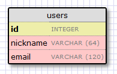

数据库¶
回顾¶
在前面的章节中，我们已经创建了登录表单，完成了提交以及验证。在这篇文章中，我们要创建我们的数据库，并设置它，这样我们就可以保存我们的用户。
我们接下来讲述的正是我们上一章离开的地方，所以你可能要确保应用程序 microblog 正确地安装和工作。
从命令行中运行 Python 脚本¶
在这一章中我们会写一些脚本用来简化数据库的管理。在我们开始编写脚本之前，先来温习下 Python 脚本如何在命令行中执行。
如果你使用 Linux 或者 OS X 系统的话，脚本必须给予一定的权限，像这样:
chmod a+x script.py
脚本中有一个 shebang ，它指明应该使用的解释器。一个脚本如果被赋予了执行权限并且有一个 shebang 行能够被简单地像这样执行:
./script.py <arguments>
在 Windows 上，上面的操作是没有作用的，相反你必须提供脚本作为选择的 Python 解释器的一个参数:
flask\Scripts\python script.py <arguments>
为了避免键入 Python 解释器的路径，你可以把 microblog/flask/Scripts 加入到系统路径中，但是务必让它在你的 Python 解释器之前。
从现在起，在本教程中的 Linux / OS X 的语法将用于缩写。如果你是在 Windows 上，记得适当的语法转换。
Flask 中的数据库¶
我们将使用 Flask-SQLAlchemy 扩展来管理我们应用程序的数据。这个扩展封装了 SQLAlchemy 项目，这是一个 对象关系映射器 或者 ORM。
ORMs 允许数据库应用程序与对象一起工作，而不是表以及 SQL。执行在对象的操作会被 ORM 翻译成数据库命令。这就意味着我们将不需要学习 SQL，我们将让 Flask-SQLAlchemy 代替 SQL。
迁移¶
我见过的大多数数据库教程会涉及到创建和使用一个数据库，但没有充分讲述随着应用程序扩大更新数据库的问题。通常情况下，每次你需要进行更新，你最终不得不删除旧的数据库和创建一个新的数据库，并且失去了所有的数据。如果数据不能容易地被重新创建，你可能会被迫自己编写导出和导入脚本。
幸运地，我们还有一个更好的选择。
我们将使用 SQLAlchemy-migrate 来跟踪数据库的更新。它只是在开始建立数据库的时候多花费些工作，这只是很小的代价，以后就再不用担心人工数据迁移了。
配置¶
针对我们小型的应用，我们将采用 sqlite 数据库。sqlite 数据库是小型应用的最方便的选择，每一个数据库都是存储在单个文件里。
我们有许多新的配置项需要添加到配置文件中(文件 config.py):
import os
basedir = os.path.abspath(os.path.dirname(__file__))
SQLALCHEMY_DATABASE_URI = 'sqlite:///' + os.path.join(basedir, 'app.db')
SQLALCHEMY_MIGRATE_REPO = os.path.join(basedir, 'db_repository')
SQLALCHEMY_DATABASE_URI 是 Flask-SQLAlchemy 扩展需要的。这是我们数据库文件的路径。
SQLALCHEMY_MIGRATE_REPO 是文件夹，我们将会把 SQLAlchemy-migrate 数据文件存储在这里。
最后，当我们初始化应用程序的时候，我们也必须初始化数据库。这是我们更新后的初始化文件(文件 app/__init__.py):
from flask import Flask
from flask.ext.sqlalchemy import SQLAlchemy
app = Flask(__name__)
app.config.from_object('config')
db = SQLAlchemy(app)
from app import views, models
注意我们在初始化脚本中的两个改变。创建了一个 db 对象，这是我们的数据库，接着导入一个新的模块，叫做 models。接下来我们将编写这个模块。
数据库模型¶
我们存储在数据库中数据将会以类的集合来表示，我们称之为数据库模型。ORM 层需要做的翻译就是将从这些类创建的对象映射到适合的数据库表的行。
让我们创建一个表示用户的模型。使用 WWW SQL Designer 工具，我制作如下的图来表示我们用户的表:
id 字段通常会在所有模型中，并且用于作为主键。在数据库的每一个用户会被赋予一个不同的 id 值，存储在这个字段中。幸好这是自动完成的，我们仅仅需要的是提供 id 这个字段。
nickname 以及 email 字段是被定义成字符串，并且指定了最大的长度以便数据库可以优化空间占用。
role 字段是一个整型，我们将使用它来表示哪个用户是管理员，哪个不是。
现在我们已经决定用户表的样子，剩下的工作就是把它转换成代码(文件 app/models.py):
from app import db
ROLE_USER = 0
ROLE_ADMIN = 1
class User(db.Model):
id = db.Column(db.Integer, primary_key = True)
nickname = db.Column(db.String(64), index = True, unique = True)
email = db.Column(db.String(120), index = True, unique = True)
role = db.Column(db.SmallInteger, default = ROLE_USER)
def __repr__(self):
return '<User %r>' % (self.nickname)
我们刚刚创建的 User 类包含一些字段，这些字段被定义成类的变量。字段是被作为 db.Column 类的实例创建的，db.Column 把字段的类型作为参数，并且还有一些其它可选的参数，比如表明字段是否唯一。
__repr__ 方法告诉 Python 如何打印这个类的对象。我们将用它来调试。
创建数据库¶
配置以及模型都已经到位了，是时候准备创建数据库文件。SQLAlchemy-migrate 包自带命令行和 APIs，这些 APIs 以一种将来允许容易升级的方式来创建数据库。我发现命令行使用起来比较别扭，因此我们自己编写一些 Python 脚本来调用迁移的 APIs。
这是创建数据库的脚本(文件 db_create.py):
#!flask/bin/python
from migrate.versioning import api
from config import SQLALCHEMY_DATABASE_URI
from config import SQLALCHEMY_MIGRATE_REPO
from app import db
import os.path
db.create_all()
if not os.path.exists(SQLALCHEMY_MIGRATE_REPO):
api.create(SQLALCHEMY_MIGRATE_REPO, 'database repository')
api.version_control(SQLALCHEMY_DATABASE_URI, SQLALCHEMY_MIGRATE_REPO)
else:
api.version_control(SQLALCHEMY_DATABASE_URI, SQLALCHEMY_MIGRATE_REPO, api.version(SQLALCHEMY_MIGRATE_REPO))
为了创建数据库，你需要运行这个脚本(记得如果在 Windows 上命令有些不同):
./db_create.py
在运行上述命令之后你会发现一个新的 app.db 文件。这是一个空的 sqlite 数据库，创建一开始就支持迁移。同样你还将有一个 db_repository 文件夹，里面还有一些文件，这是 SQLAlchemy-migrate 存储它的数据文件的地方。请注意，我们不会再生的存储库，如果它已经存在。这将使我们重新创建数据库，同时保留现有的存储库，如果我们需要。
第一次迁移¶
现在，我们已经定义了我们的模型，我们可以将其合并到我们的数据库中。我们会把应用程序数据库的结构任何的改变看做成一次迁移，因此这是我们第一次迁移，我们将从一个空数据库迁移到一个能存储用户的数据库上。
为了实现迁移，我们需要编写一小段 Python 代码(文件 db_migrate.py):
#!flask/bin/python
import imp
from migrate.versioning import api
from app import db
from config import SQLALCHEMY_DATABASE_URI
from config import SQLALCHEMY_MIGRATE_REPO
migration = SQLALCHEMY_MIGRATE_REPO + '/versions/%03d_migration.py' % (api.db_version(SQLALCHEMY_DATABASE_URI, SQLALCHEMY_MIGRATE_REPO) + 1)
tmp_module = imp.new_module('old_model')
old_model = api.create_model(SQLALCHEMY_DATABASE_URI, SQLALCHEMY_MIGRATE_REPO)
exec old_model in tmp_module.__dict__
script = api.make_update_script_for_model(SQLALCHEMY_DATABASE_URI, SQLALCHEMY_MIGRATE_REPO, tmp_module.meta, db.metadata)
open(migration, "wt").write(script)
api.upgrade(SQLALCHEMY_DATABASE_URI, SQLALCHEMY_MIGRATE_REPO)
print 'New migration saved as ' + migration
print 'Current database version: ' + str(api.db_version(SQLALCHEMY_DATABASE_URI, SQLALCHEMY_MIGRATE_REPO))
脚本看起来很复杂，其实际上做的并不多。SQLAlchemy-migrate 迁移的方式就是比较数据库(在本例中从 app.db 中获取)与我们模型的结构(从文件 app/models.py 获取)。两者间的不同将会被记录成一个迁移脚本存放在迁移仓库中。迁移脚本知道如何去迁移或撤销它，所以它始终是可能用于升级或降级一个数据库。
然而在使用上面的脚本自动地完成迁移的时候也不是没有问题的，我见过有时候它很难识别新老格式的变化。为了让 SQLAlchemy-migrate 容易地识别出变化，我绝不会重命名存在的字段，我仅限于增加或者删除模型或者字段，或者改变已存在字段的类型。当然我一直会检查生成的迁移脚本，确保它是正确。
毋庸置疑你不应该在没有备份下去尝试迁移数据库。当然也不能在生产环境下直接运行迁移脚本，必须在开发环境下确保迁移运转正常。
因此让我们继续进行，记录下迁移:
./db_migrate.py
脚本的输出如下:
New migration saved as db_repository/versions/001_migration.py
Current database version: 1
脚本会打印出迁移脚本存储在哪里，也会打印出目前数据库版本。空数据库的版本是0，在我们迁移到包含用户的数据库后，版本为1.
数据库升级和回退¶
到现在你可能想知道为什么完成记录数据库迁移的这项令人麻烦的事情是这么重要。
假设你有一个应用程序在开发机器上，同时有一个拷贝部署在到线上的生产机器上。在下一个版本中，你的数据模型有一个变化，比如新增了一个表。如果没有迁移脚本，你可能必须要琢磨着如何修改数据库格式在开发和生产机器上，这会花费很大的工作。
如果有数据库迁移的支持，当你准备发布新版的时候，你只需要录制一个新的迁移，拷贝迁移脚本到生产服务器上接着运行脚本，所有事情就完成了。数据库升级也只需要一点 Python 脚本(文件 db_upgrade.py):
#!flask/bin/python
from migrate.versioning import api
from config import SQLALCHEMY_DATABASE_URI
from config import SQLALCHEMY_MIGRATE_REPO
api.upgrade(SQLALCHEMY_DATABASE_URI, SQLALCHEMY_MIGRATE_REPO)
print 'Current database version: ' + str(api.db_version(SQLALCHEMY_DATABASE_URI, SQLALCHEMY_MIGRATE_REPO))
当你运行上述脚本的时候，数据库将会升级到最新版本。
通常情况下，没有必要把数据库降低到旧版本，但是，SQLAlchemy-migrate 支持这么做(文件 db_downgrade.py):
#!flask/bin/python
from migrate.versioning import api
from config import SQLALCHEMY_DATABASE_URI
from config import SQLALCHEMY_MIGRATE_REPO
v = api.db_version(SQLALCHEMY_DATABASE_URI, SQLALCHEMY_MIGRATE_REPO)
api.downgrade(SQLALCHEMY_DATABASE_URI, SQLALCHEMY_MIGRATE_REPO, v - 1)
print 'Current database version: ' + str(api.db_version(SQLALCHEMY_DATABASE_URI, SQLALCHEMY_MIGRATE_REPO))
这个脚本会回退数据库一个版本。你可以运行多次来回退多个版本。
数据库关系¶
关系型数据可以很好的存储数据项之间的关系。考虑一个用户写了一篇 blog 的例子。在 users 表中有一条用户的数据，在 posts 表中有一条 blog 数据。记录是谁写了这篇 blog 的最有效的方式就是连接这两条相关的数据项。
一旦在用户和文章(post)的联系被建立，有两种类型的查询是我们可能需要使用的。最常用的查询就是查询 blog 的作者。复杂一点的查询就是一个用户的所有的 blog。Flask-SQLAlchemy 将会帮助我们完成这两种查询。
让我们扩展数据库以便存储 blog。为此我们回到数据库设计工具并且创建一个 posts 表。

我们的 posts 表中有必须得 id 字段，以及 blog 的 body 以及一个 timestamp。这里没有多少新东西。只是对 user_id 字段需要解释下。
我们说过想要连接用户和他们写的 blog。方式就是通过在 posts 增加一个字段，这个字段包含了编写 blog 的用户的 id。这个 id 称为一个外键。我们的数据库设计工具把外键显示成一个连线，这根连线连接于 users 表中的 id 与 posts 表中的 user_id。这种关系称为一对多，一个用户编写多篇 blog。
让我们修改模型以反映这些变化(app/models.py):
from app import db
ROLE_USER = 0
ROLE_ADMIN = 1
class User(db.Model):
id = db.Column(db.Integer, primary_key = True)
nickname = db.Column(db.String(64), unique = True)
email = db.Column(db.String(120), unique = True)
role = db.Column(db.SmallInteger, default = ROLE_USER)
posts = db.relationship('Post', backref = 'author', lazy = 'dynamic')
def __repr__(self):
return '<User %r>' % (self.nickname)
class Post(db.Model):
id = db.Column(db.Integer, primary_key = True)
body = db.Column(db.String(140))
timestamp = db.Column(db.DateTime)
user_id = db.Column(db.Integer, db.ForeignKey('user.id'))
def __repr__(self):
return '<Post %r>' % (self.body)
我们添加了一个 Post 类，这是用来表示用户编写的 blog。在 Post 类中的 user_id 字段初始化成外键，因此 Flask-SQLAlchemy 知道这个字段是连接到用户上。
值得注意的是我们已经在 User 类中添加一个新的字段称为 posts，它是被构建成一个 db.relationship 字段。这并不是一个实际的数据库字段，因此是不会出现在上面的图中。对于一个一对多的关系，db.relationship 字段通常是定义在“一”这一边。在这种关系下，我们得到一个 user.posts 成员，它给出一个用户所有的 blog。不用担心很多细节不知道什么意思，以后我们会不断地看到例子。
首先还是来运行迁移脚本:
./db_migrate.py
输出:
New migration saved as db_repository/versions/002_migration.py
Current database version: 2
编程时间¶
首先创建一个新用户:
>>> u = models.User(nickname='john', email='john@email.com', role=models.ROLE_USER)
>>> db.session.add(u)
>>> db.session.commit()
>>>
在会话的上下文中完成对数据库的更改。多个的更改可以在一个会话中累积，当所有的更改已经提交，你可以发出一个 db.session.commit()，这能原子地写入更改。如果在会话中出现错误的时候， db.session.rollback() 可以是数据库回到会话开始的状态。如果即没有 commit 也没有 rollback 发生，系统默认情况下会回滚会话。会话保证数据库将永远保持一致的状态。
让我们添加另一个用户:
>>> u = models.User(nickname='susan', email='susan@email.com', role=models.ROLE_USER)
>>> db.session.add(u)
>>> db.session.commit()
>>>
现在我们可以查询用户:
>>> users = models.User.query.all()
>>> print users
[<User u'john'>, <User u'susan'>]
>>> for u in users:
... print u.id,u.nickname
...
1 john
2 susan
>>>
对于查询用户，我们使用 query 成员，这是对所有模型类都是可用的。
这是另外一种查询。如果你知道用户的 id ，我们能够找到这个用户的数据像下面这样:
>>> u = models.User.query.get(1)
>>> print u
<User u'john'>
>>>
现在让我们提交一篇 blog:
>>> import datetime
>>> u = models.User.query.get(1)
>>> p = models.Post(body='my first post!', timestamp=datetime.datetime.utcnow(), author=u)
>>> db.session.add(p)
>>> db.session.commit()
这里我们设置我们的 timestamp 为 UTC 时区。所有存储在数据库的时间戳都会是 UTC。我们有来自世界上不同地方的用户因此需要有个统一的时间单位。在后面的教程中会以当地的时间呈现这些时间在用户面前。
你可能注意到了我们并没有设置 user_id 字段。相反我们在 author 字段上存储了一个 User 对象。ORM 层将会知道怎么完成 user_id 字段。
让我们多做一些查询:
# get all posts from a user
>>> u = models.User.query.get(1)
>>> print u
<User u'john'>
>>> posts = u.posts.all()
>>> print posts
[<Post u'my first post!'>]
# obtain author of each post
>>> for p in posts:
... print p.id,p.author.nickname,p.body
...
1 john my first post!
# a user that has no posts
>>> u = models.User.query.get(2)
>>> print u
<User u'susan'>
>>> print u.posts.all()
[]
# get all users in reverse alphabetical order
>>> print models.User.query.order_by('nickname desc').all()
[<User u'susan'>, <User u'john'>]
>>>
Flask-SQLAlchemy 文档可能会提供更多有帮助的信息。
在结束之前，需要清除一下刚才创建的数据，以便在下一章中会有一个干净的数据库:
>>> users = models.User.query.all()
>>> for u in users:
... db.session.delete(u)
...
>>> posts = models.Post.query.all()
>>> for p in posts:
... db.session.delete(p)
...
>>> db.session.commit()
>>>
结束语¶
这是一个漫长的教程。我们已经学会了使用数据库的基本知识，但我们还没有纳入到我们的应用程序的数据库。在下一章中，我们将会把我们所学到的所有关于数据库的知识用于实践。
如果你想要节省时间的话，你可以下载 microblog-0.4.zip。
我希望能在下一章继续见到各位！